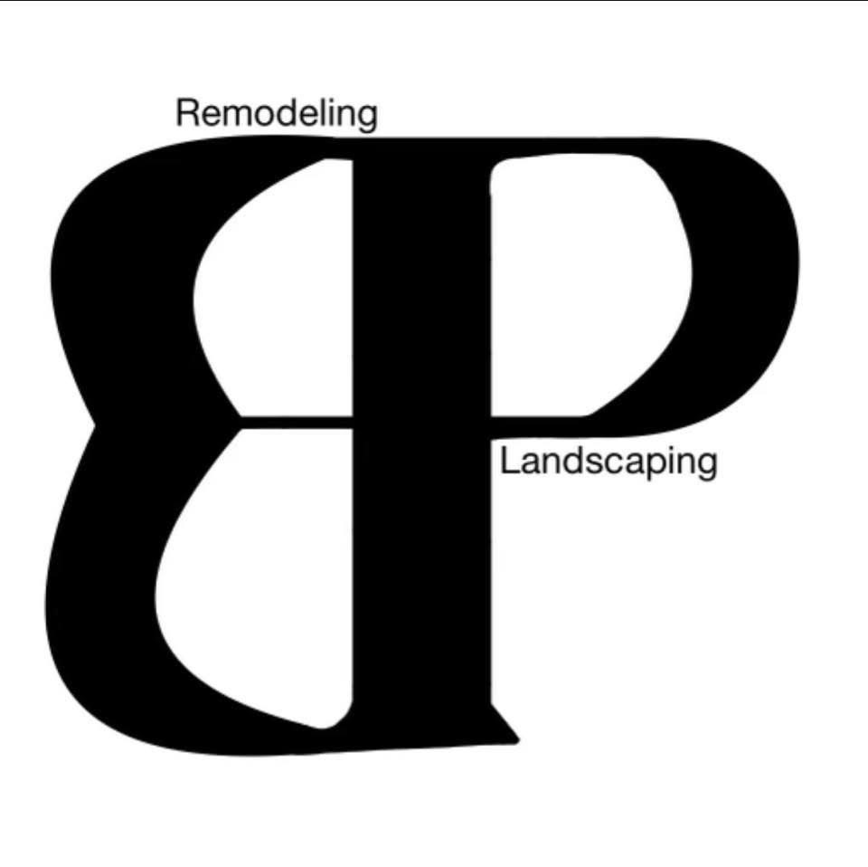
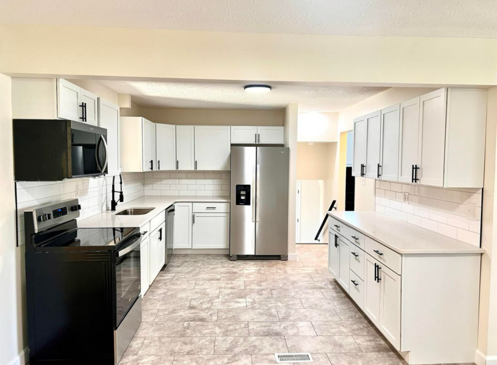

We’re proud to provide reliable home improvement and construction services across the West Virginia tri-state area, helping homeowners bring their vision to life with quality workmanship and attention to detail.

We are a locally focused contractor dedicated to delivering dependable craftsmanship and honest service on every project. Our goal is simple — provide high-quality work that improves the comfort, value, and longevity of your home.
From flooring and drywall to full kitchen and bathroom remodels, roofing, decks, siding, and landscaping, we handle projects of all sizes with care and professionalism. We take pride in clear communication, reliable timelines, and results homeowners can feel confident in.